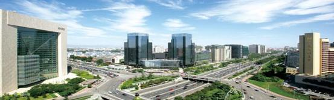

About Beijing
Beijing (北京) Capital of China
Average Temperatures
Spring: 1℃-12℃
Summer: 18℃-29℃
Autumn： 15℃-25℃
Winter : -5℃-5℃
Language
The Official language is Mandarin and most people also use their local dialect. The standard spoken Chinese is Putonghua. English can be understood by many young people and is used in hotels and big restaurants. In all tourist hotels, staff can speak in English, Japanese or other languages. They can also write down addresses or instructions in Chinese for taxi drivers or others. In addition, roads in major cities are signposted in Pinyin, the official Romanization system of the Chinese characters, which makes it quite easy to get around with the help of a map.
Currency
Renminbi (RMB) is the only currency used in China. RMB is also called Chinese Yuan. The unit of Renminbi is yuan and with smaller denominations called jiao and fen. The conversion among the three is: 1 yuan = 10 jiao =100 fen. Paper notes are issued in denominations of 1, 2, 5, 10, 50 and 100 yuan; 1, 2 and 5 jiao; and 1, 2 and 5 fen. Coins are issued in denominations of 1 yuan; 5 jiao; and 1, 2 and 5 fen.
Money exchanges by cash or traveler's cheques can be made at the branches of Bank of China. Please remember to keep the receipt to exchange back to foreign currency when leaving China.
Credit Cards
Visa, MasterCard and American Express are most commonly used in China. Cards can be used in most middle to top-range hotels, Friendship and department stores, but they cannot be used to finance your transportation costs.
Time
GMT + 8 hours (the whole of China is set to Beijing time)
Electricity
Electricity is 220 Volts, 50 AC; plugs can be three-pronged flat pins, two flat pins or two narrow round pins. Some examples are as follows:
Beijing History and Today
From the time the Emperor Qin Shi Huang unified China in the year 221 BC, Beijing became a strategic place and local kaiserdom center in the northern part of China. From the year 581 to 618 (Sui Dynasty), Beijing was called 'Zhuo' and had a population of 130,000 people. From 618 to 907 (Tang Dynasty), Beijing was called 'You'. During these two dynasties, it was not only a strategic military place but also the major trade center. In the year 938 of Liao Dynasty (916-1125), the city became the alternate capital of the kingdom of 'Liao' which was founded by the minority ethnic group Qidan who lived in the northeast of China. Because Beijing of that time was located in the south part of their kingdom, it was renamed 'Nanjing' (in Chinese, 'Nan' means 'in the south place').
Through years’ development, Beijing has become an international metropolis. The metropolis is governed as a direct-controlled municipality under the national government, with 16 urban and suburban districts.
Nowadays Beijing is the second largest Chinese city by urban population after Shanghai and is the nation’s political, cultural and educational center. It is home to the headquarters of most of China’s largest state-owned companies, and is a major hub for the national highway, expressway, railway and high-speed rail networks. The Beijing Capital International Airport is the second busiest in the world by passenger traffic.

Beijing is among the most developed cities in China, with tertiary industry accounting for 73.2% of its gross domestic product. Beijing is an important transport hub in North China with five ring roads, nine expressways, eleven National Highways, nine conventional railways, and two high-speed railways converging on the city. Beijing serves as a large rail hub in China's railway network. Ten conventional rail lines radiate from the city to: Shanghai (Jinghu Line), Guangzhou (Jingguang Line), Kowloon (Jingjiu Line), Harbin (Jingha Line), Baotou (Jingbao Line), Qinhuangdao (Jingqin Line), Chengde (Jingcheng Line), Tongliao, Inner Mongolia (Jingtong Line), Yuanping, Shanxi (Jingyuan Line) and Shacheng, Hebei (Fengsha Line). In addition, the Datong–Qinhuangdao Railway passes through the municipality to the north of the city.
Beijing also has three high-speed rail lines: the Beijing-Tianjin Intercity Railway, which opened in 2008; the Beijing-Shanghai High-Speed Railway, which opened in 2011; and the Beijing–Guangzhou High-Speed Railway, which opened in 2012.
The city's main railway stations are the Beijing Railway Station, which opened in 1959; the Beijing West Railway Station, which opened in 1996; and the Beijing South Railway Station, which was rebuilt into the city's high-speed railway station in 2008. As of 1 July 2010, Beijing Railway Station had 173 trains arriving daily, Beijing West had 232 trains and Beijing South had 163. The Beijing North Railway Station, first built in 1909 and expanded in 2009, had 22 trains.
Beijing is home to a great number of colleges and universities, including Peking University and Tsinghua University (two of the National Key Universities). Owing to Beijing's status as the political and cultural capital of China, a larger proportion of tertiary-level institutions are concentrated here than in any other city in China (at least 70). Many international students from Japan, Korea, North America, Europe, Southeast Asia, and elsewhere come to Beijing to study every year, some through third party study abroad providers such as IES Abroad and others as part of an exchange program with their home universities. The schools are administered by China's Ministry of Education.
There are many Beijing local products including Zi Sha Pot, Kites, Chinese Clay Figurines, Kong Zhu, Facial Makeup in Peking Opera, Qi Pao, Jade Ornaments, Embroidered Shoes, He Nian Tang, Tong Ren Tang, Le Ren Tang, Nei Lian Sheng Shoes, Dough Figurine and etc. You can find details about them here.